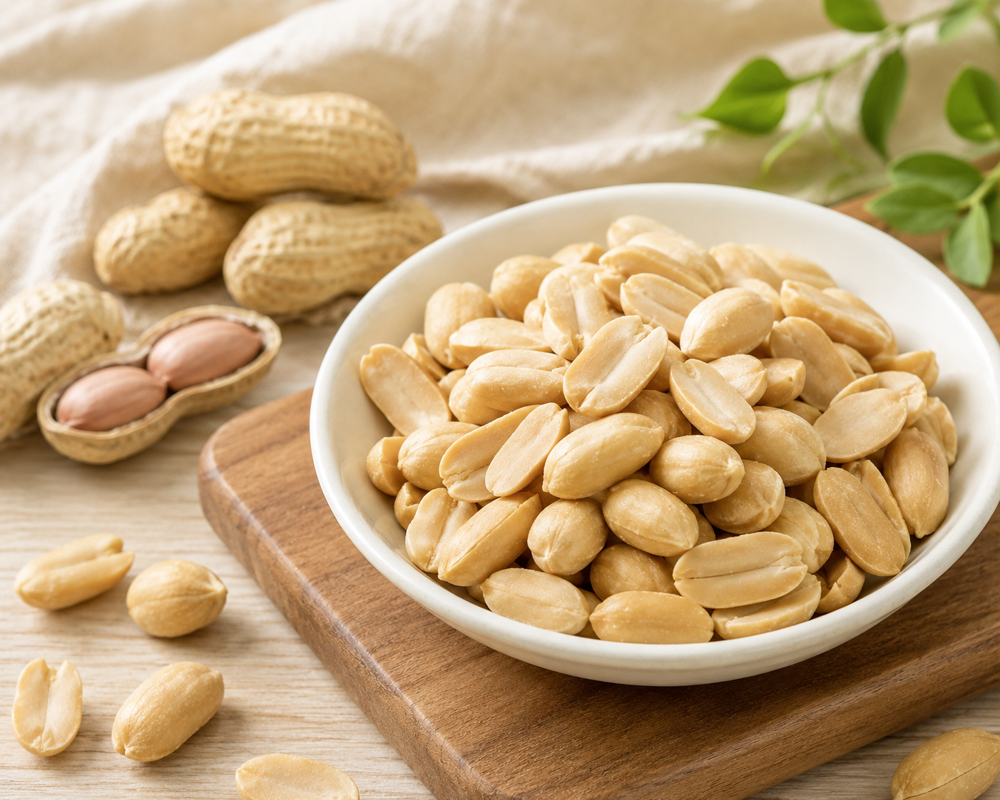

雲林元長・自家參與種植
從土地到烘焙，留住花生真正的香。
我們是來自雲林元長的花生品牌「花生一生」。從種植、採收、挑選到乾烘焙，親自參與每一步，把單純、飽滿的花生香送進你的日常。
雲林元長產地挑選分級乾烘焙少添加

一顆花生，不只是一份零嘴。它裝著土地、季節與做事的堅持。
WHY WE STARTED
我們想讓你知道，手上的花生從哪裡來。
「花生一生」從一顆花生開始，把種植、採收、乾燥、挑選、烘焙到包裝的每個環節，認真做，也清楚說。
不是把故事說得很遠，而是讓每一口都回到真實的土地與風味。
FROM OUR FIELD
把花生香，帶回家。
成分單純、來源清楚。適合泡茶、聊天，也適合放進每天想吃點好東西的時刻。
WHAT MATTERS TO US
好吃之前，先把每一步做好。
從產地開始
來自雲林元長自家參與種植的土地，來源不只是一個地名，而是我們每天工作的地方。
挑選與分級
重視外觀、完整度與品質篩選，減少不良花生混入，讓每包品質更加穩定。
乾烘焙風味
減少多餘添加，用適合的火候帶出花生本身的香甜、酥脆與飽滿風味。
THE LIFE OF A PEANUT
從一粒種子，到你手上的一包花生。
我們把過程攤開來，因為好味道從來不是最後一刻才發生。
壹種植與照顧跟著季節與土地，等待花生在土裡慢慢成熟。
貳採收與乾燥掌握採收時機，仔細乾燥，讓花生保持穩定品質。
參挑選與分級把不完整的花生挑出，留下值得進入下一步的果實。
肆烘焙與包裝用適合的火候喚醒香氣，再好好封存這份新鮮。
我們賣的不只是花生，而是一條看得見的來路。
PEANUT JOURNAL
懂一點，更懂得怎麼吃。
整理花生保存、烘焙、風味與品牌紀錄，慢慢累積一顆花生值得被理解的地方。
文章載入中...